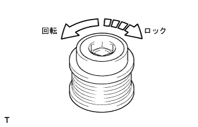
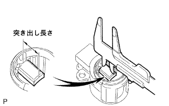
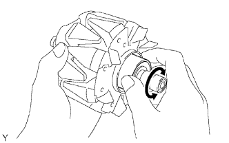
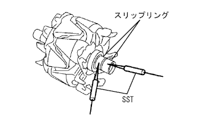
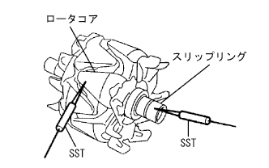
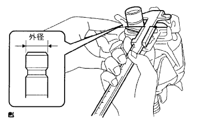
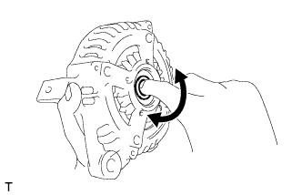

Alternator Assembly (2AZ-FE) Inspection |
| 1. Inspect Alternator Pulley (w/ Clutch) |
 |
Check that the pulley locks when turned clockwise and turns smoothly when turned counterclockwise.
| 2. Inspect Alternator Brush Holder Assembly |
 |
Using vernier calipers, measure the exposed length of the brushes.
| 3. Inspect Alternator Rotor Assembly |
Bearing Inspection
 |
Turn the alternator rotor bearing and check that it is not noisy and does not bind.
Resistance Inspection
 |
Using SST (Toyota electrical tester), measure the resistance between the slip rings.
 |
Using SST (Toyota electrical tester), measure the resistance between the slip ring and rotor core.
Outer Diameter Inspection
 |
Using vernier calipers, measure the diameter of the slip rings.
| 4. Inspect Alternator Drive End Frame Bearing |
 |
Turn the alternator drive end frame bearing and check that it is not noisy and does not bind.